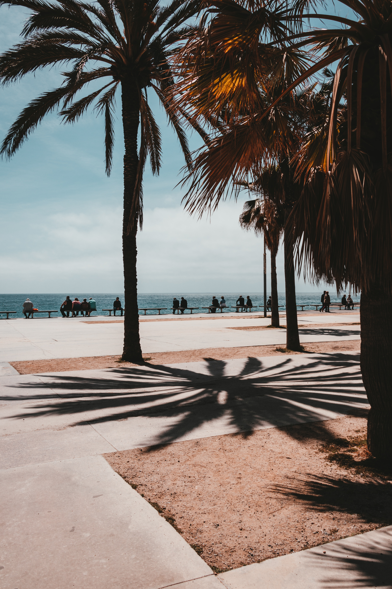
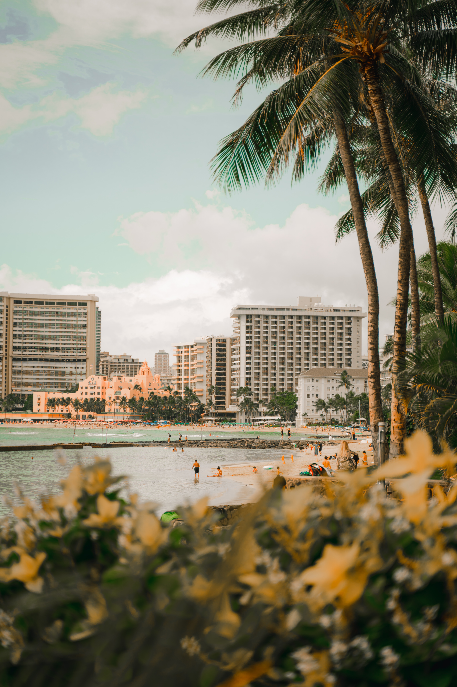

"I write songs that are like diary entries. I have to do it in order to
feel sane."
-Taylor Swift
Keeping diaries is creating our personal archive of our life, and blogging, a personal online collection of
diaries, is a dynamic and influential form of online expression that has transformed the way we share ideas,
stories, and information.
I am grateful and proud of Blogging website, which allows me to create my first blog: my submission for 30MFF
at NYU Abu Dhabi (Click at the picture below)! Hope you enjoy.
A Summer Story
30MFF: A Summer Story
The sun hung high in the cloudless sky, casting a golden glow upon the world below. It was the perfect summer
day, and excitement filled the air as I embarked on a long-anticipated trip to explore the day.
The car's tires crunched over the seashell-strewn road, and the scent of saltwater grew stronger with each
passing mile. Windows rolled down, allowing the coastal breeze to ruffle the children's hair and carry the
distant sound of seagulls' cries.
As I approached the coast, the deep blue expanse of the ocean stretched out before me, endless and
inviting. The children on the coast widened their eyes in wonder as they caught their first glimpse of the
sparkling waves. The beach, with its soft, sun-kissed sand, welcomed me like an old friend.
The water beckoned, its cool touch refreshing against the warm sand. The children dashed toward the waves,
squealing with delight as they splashed and frolicked in the shallows. Each crashing wave felt like a
playful embrace from the ocean, washing away the cares of the world. Adults, riding their water jets, were
also indulging themselves in this heat and energy of summer.


Those on the beach, taking a moment to relax, reclined on beach chairs beneath the shade of the
umbrella.
They watched their children with smiles, cherishing these moments of pure, unadulterated
happiness. Seagulls
glided overhead, their graceful wings casting shadows on the sand.
Soon, the afternoon approached. Back to the city, as the sun graces the urban landscape with its
warmth,
parks and green spaces become popular retreats, where picnickers gather and children frolic.
Sidewalk cafes
spill onto the streets, filling the air with the tantalizing aroma of diverse cuisines.
Festivals and
outdoor events abound, offering a kaleidoscope of entertainment options, from open-air concerts
to art
exhibitions.
Evenings are a symphony of city lights and laughter, as residents and visitors alike savor the
warm nights, creating memories against the backdrop of the urban skyline. Summer in the city is
a time when
the metropolis truly comes alive, inviting everyone to partake in its lively spirit.
Summer, by the ocean or in the city, is a season full of life and energy. And for me, it nenver
ends.
Blogging is an online platform that empowers individuals to create and share their unique perspectives,
experiences, and insights with a global audience.
Through this website, users can craft and publish
their own blogs, providing a space for creative expression, information sharing, and community building.
Whether it's personal reflections, expert opinions, or niche interests, Blogging offers a versatile and
accessible medium for anyone to contribute to the digital landscape and engage with like-minded
individuals worldwide. Explore the diverse world of blogging and join the conversation today!